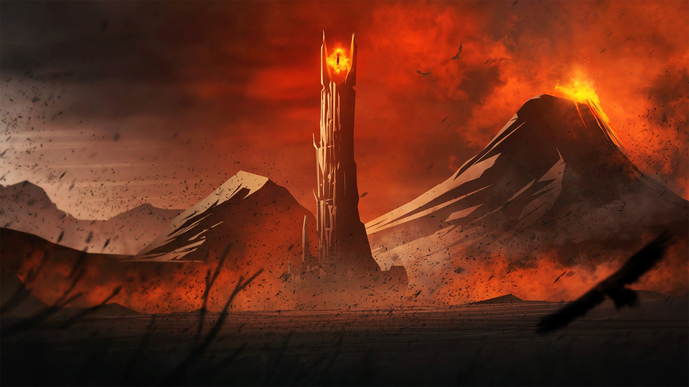

Bienvenidos a
LOTR Wiki
"El verdadero valor consiste en saber no cuándo quitar
una vida, sino cuándo perdonarla". - Gandalf.
El Señor de los Anillos
El Señor de los Anillos, conocida también por su título original en inglés The Lord of the Rings, es una franquicia compuesta principalmente por una serie de novelas de fantasía épica escritas por el autor británico J. R. R. Tolkien, publicadas a mediados del siglo XX, y adaptadas posteriormente al cine por el director neozelandés Peter Jackson en una trilogía cinematográfica estrenada entre 2001 y 2003. Su trama narra las aventuras de un grupo de personajes que habitan en la Tierra Media, un mundo ficticio donde conviven diversas razas como hobbits, elfos, enanos y hombres, y donde se desarrolla la lucha entre el bien y el mal a través del conflicto central en torno al Anillo Único, un poderoso objeto mágico forjado por el señor oscuro Sauron. La historia destaca valores como la amistad, el coraje y la esperanza, en un contexto marcado por la guerra, la traición y la búsqueda de redención.
Novedades
Diferencias entre la trilogía de El Hobbit con el libro original
Muchas... En primer lugar el libro es uno solo, pero como Peter Jackson le quizo dar el mismo crecimiento que tuvo frodo en la trilogia del señor de los anillos, se mandaron 3 peliculas. Entre las 3 son un 30% fieles al libro, quizas menos, tienen buenos efectos practicos, una banda de CGI, y le metieron mucho relleno, personajes que no existen, cambiaron cosas, hay incoherencias, etc. Cuando se lee el libro se entiende porque a tanta gente no les gustaron.
Cómo debería haber sido El Silmarillion
Es larguisimo, una banda de personajes y ramas genealogicas, pero se dice que J.R.R. Tolkien, por su avanzada edad y su enfoque en los siguientes 4 libros ( El hobbit y los 4 del señor de los anillos), no pudo completarlo como hubiera querido.
El fracaso de Los Anillos de Poder de Amazon
La serie mas cara de la historia y un fracaso nuclear. Si el hobbit no fue fiel y para algunos fueron malas peliculas, la serie de amazon prime video, esta directamente no tiene nada que ver con el señor de los anillos y su historia de la segunda edad. Cualquier cosa, pseimas actuaciones, una historia sin sentido, una verguenza, inmirable y una falta de respetoal hincha de J.R.R. Tolkien. Por suerte Jeff Bezos le dio de baja al proyecto y lo pusieron en venta para terminar con este sufrimiento.
Peter Jackson a la carga con nuevas peliculas
Peter Jackson y Andy Serkis están trabajando en una nueva película de El Señor de los Anillos, llamada "La Caza de Gollum", que se estrenará en 2026. Además, Peter Jackson también está involucrado en una nueva serie de películas de El Señor de los Anillos, con Andy Serkis como director. Se viene